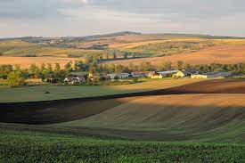
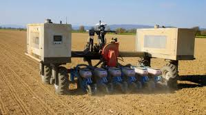

Сільське господарство Чехії
Сільськогосподарське виробництво на початку 1990-х років скоротилося як через зменшення попиту на цю продукцію за кордоном, так і внаслідок збільшення імпорту продуктів споживання. Проведена приватизація сільськогосподарських земель. До 1997 р. ¾ сільськогосподарських кооперативів за рішенням їх членів були перетворені в кооперативи землевласників; фермерство не набуло масових масштабів. Орна земля становила наприкінці 1990-х років 39,2 %. У середині 1998 в сільському господарстві було зайнято 198 тис. Чоловік.

Розвиток сілького господарства

У сільському господарстві діє 584 кооперативи, 29 404 індивідуальні господарства, 2 154 торговельні компанії. Основні галузі – вирощування зерна, цукрових буряків, картоплі, рапсу, овочів і фруктів, виноградарство, тваринництво, птахівництво.